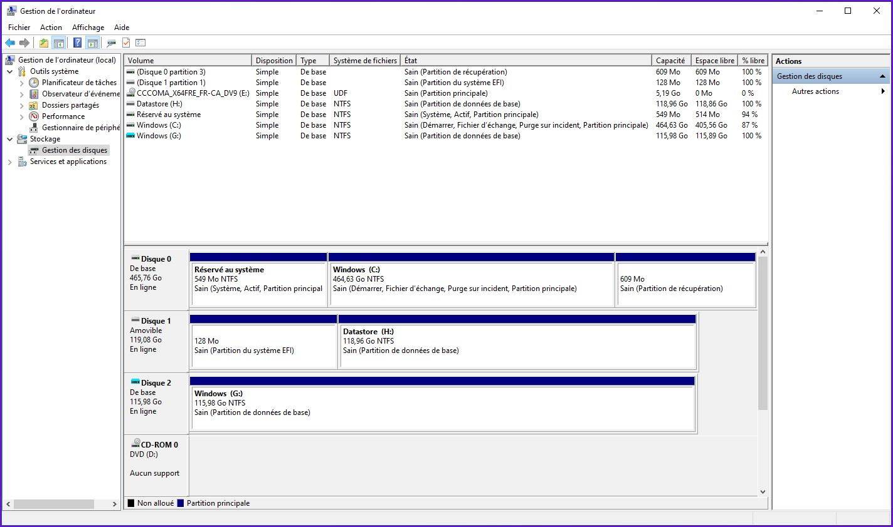
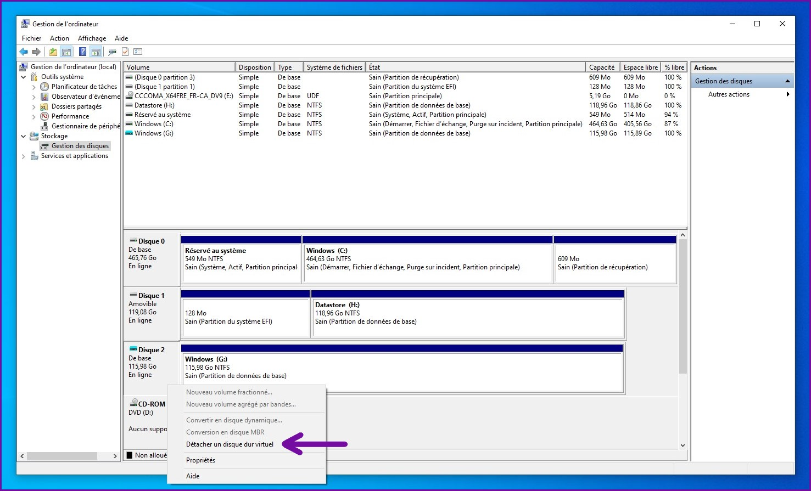

Installer Windows
Dans cette partie, nous allons procéder à l'installation de Windows 10 sur la partition allouée pour le système, soit physique ou sur VHD. Ce sera une installation de Windows par déploiement de l'image en mode ligne de commandes, sans interface graphique.
C'est un outil nommé dism (Deployment Image Servicing and Management) fourni avec Windows qui permet d'effectuer ce type d'installation. Celui-ci permet de faire certaines opérations avec les images de type Windows .wim que l'on retrouve souvent sur le DVD amorçable du système.
L'objectif est tout simplement d'appliquer l'image de Windows 10 sur la partition dédiée au système sur notre périphérique amovible. Afin d'utiliser dism, il nous faut l'image du système à installer. Pour Windows 10, elle se nomme install.wim et se trouve dans le répertoire sources du média d'installation amorçable. Notre image du DVD de Windows 10, téléchargée dans la première partie de ce guide devrait être déja montée. Ici, c'est sur le lecteur E:/ qu'elle y est.
Aller voir dans E:/sources/ si l'image install.wim si retrouve. Elle devrait avoir une taille de plus de 4 Go.
Cette image contient exactement les fichiers qui se retrouveronts sur le lecteur C:/ du nouveau système une fois l'installation terminée. De plus, ce format d'image est capable de gérer plusieurs éditions de Windows (ex. Familiale, Professionel, etc.) en un seul fichier.
Commençons par voir quels éditions de Windows 10 l'image E:/sources/install.wim permet d'installer. Pour ce faire, ouvrir l'invite de commande en tant qu'administrateur et entrer la commande suivante.
dism /Get-WimInfo /WimFile:E:\sources\install.wim
Nous y retrouvons donc 5 éditions disponibles pour l'installation, index de 1 à 5. Si votre ordinateur a déja une clé d'activation numérique Windows 10 associée, vous devriez choisir la même édition. Ceci fera en sorte que votre installation de Windows to Go sera activée pour cet ordinateur. Sinon, choisir l'édition selon vos besoins.
Pour ce guide, je vais choisir Windows 10 Famille et donc l'index 1.
Appliquez l'image E:/sources/install.wim sur la partition destinée à Windows sur votre disque amovible.
- Si vous n'utilisez pas de VHD, écrire l'image sur la seconde partition (nommée «Windows») du disque amovible.
- Si vous utilisez le VHD, écrire l'image sur la partition unique (nommée «Windows») du disque virtuel.
Ici, nous allons écrire l'image dans la partition «Windows» G:/ qui se trouve sur le VHD.
Toujours avec l'invite de commandes en tant qu'administrateur, entrer la commande suivante.
dism /Apply-Image /ImageFile:E:\sources\install.wim /Index:1 /ApplyDir:G:\
- Apply-Image : Opération à effectuer, ici appliquer l'image.
- ImageFile : Chemin de l'image à appliquer.
- Index : Ce paramètre est l'index correspondant à l'édition de Windows à appliquer.
- ApplyDir : Répertoire sur lequel appliquer l'image. Sera souvent le répertoire racine d'une partition.
Attendre jusqu'à la fin du processus.
Une fois l'image complètement écrite sur la partition dédiée au système, nous devons faire en sorte que ce soit amorçable. Pour ce faire, les données de l'EFI doivent être écrites sur la petite partition FAT32 que nous avons dédiée à cette fin sur le disque amovible. Un outil inclus avec Windows nommé bcdboot permet de «reconstruire» les fichiers de démarrage du système. Pour information, le chargeur d'amorçage («bootloader») de Windows se nomme bcd.
La commande suivante permet de re-créer les fichiers sur la partition EFI F:/ requis pour démarrer sur G:/Windows en mode UEFI. Entrez celle-ci avec les bonnes valeurs de paramètres selon votre environnement.
[Chemin de l'exécutable bcdboot sur la partition système du disque amovible] [Chemin du répertoire Windows de la partition système du disque amovible] /f [Mode de démarrage] /s [Répertoire de destination des fichiers de démarrage]
Une fois les fichiers de démarrage écrits, votre environnement d'installation devrait ressembler à ceci.
Note : Ici le démarrage sur VHD est utilisé, le bcd de Windows le gère sans problèmes.
Il nous reste seulement à marquer la partition «EFI» comme étant de type EFI afin qu'elle soit reconnu comme tel par l'UEFI (le chargeur d'amorçage parent). De plus, elle deviendra cachée dans l'explorateur Windows et donc nous ne l'aurons plus dans les pattes.
Toujours en invite de commande, retourner dans l'utilitaire diskpart et obtenir la liste des disques comme on a fait dans la deuxième partie de ce guide.
list disk
Faire attention pour ne pas faire erreur, car vous allez aussi voir le disque correspondant au VHD dans cette liste. Ici, nous voulons choisir la partition «EFI» du disque amovible (disque physique et non le VHD). Pour l'installation efectuée dans ce guide, cela correspond au Disque 1 de la liste ci-dessus. Il est possible de confirmer cela en regardant dans le gestionnaire de disques Windows le numéro du disque sur lequel nous avons crée les deux partitions précédemment.
Sélectionner le disque correspondant à la carte SD, ici c'est l'ID Disque 1 (faire attention à en être bien certain).
select disk [ID]
Sélectionner ensuite la partition «EFI», on reconnait celle-ci par sa petite taille de 128 Mo. Ici c'est l'ID Partition 1 qu'il faut donc choisir.
select partition [ID]

Les actions suivantes seront donc effectuées sur la partition 1 du disque 1, ce qui correspond à la partition nommée «EFI» du disque amovible. La prochaine étape consiste à définir l'identifiant GUID EFI sur cette dernière.
Cet identifiant permet de marquer la partition comme EFI et donc reconnue comme amorçable par l'UEFI. De plus, Windows la reconnaîtra comme une partition système et la cachera de l'explorateur pour éviter d'y toucher par accident.
Pour trouver le GUID qui correspond au type EFI, afficher l'aide de la commande set.
help set
L'ID recherché se trouve dans l'encardé violet dans l'image ci-bas, celui-ci est c12a7328-f81f-11d2-ba4b-00a0c93ec93b.
Note : C'est un identifiant qui reste toujours le même, définir celui-ci sur n'importe laquelle partition la définit comme EFI. Il y a également possibilité de re-définir la partition comme étant de base en utilisant l'ID «Partition de données de base», en dessus de celui de l'EFI.
Utiliser la commande suivante afin que la partition soit définie comme étant de type EFI.
set id=c12a7328-f81f-11d2-ba4b-00a0c93ec93b
Si la commande se termine sans erreur, la partition «EFI» n'aura plus de lettre attribuée dans le gestionnaire de disque Windows et elle sera marquée comme «Partition du système EFI».
L'installation est maintenant terminée, vous pouvez retirer le périphérique amovible et le brancher sur l'ordinateur qui sera utilisé avec. Le nouveau système Windows 10 to Go est prêt! Si l'installation a été effectuée sur disque virtuel (VHD), il faut détacher celui-ci avant de retirer le périphérique, sinon il sera toujours en utilisation et risque d'être corrompu.
Fort probable qu'il faudra changer la séquence d'amorçage de l'UEFI pour démarrer sur le périphérique amovible. Le premier démarrage prend toujours un peu de temps, car Windows doit préparer les pilotes et compléter son installation. Une fois ceci fait, l'assistant de configuration de Windows 10 s'exécutera et il suffira de suivre les instructions pour arriver sur le bureau.